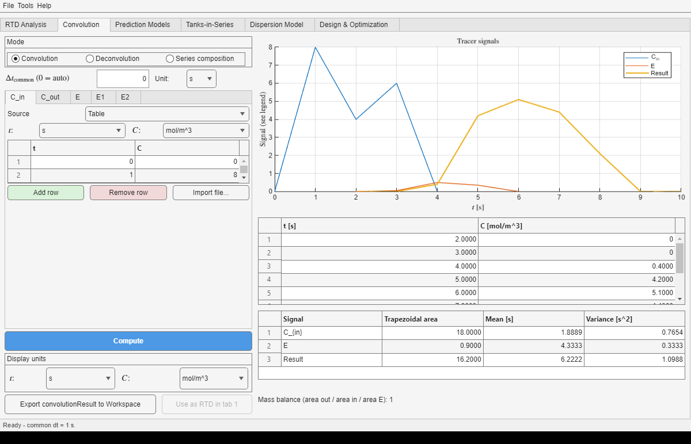

Tab 6 combines measured, analytical, piecewise, or model-based signals on one uniform time grid for convolution and deconvolution.
Choose the workflow and enter its signals on the left. The plot, result table, moments, and diagnostics remain together on the right. Hover over a label or control for a short description.

| Mode | Inputs | Result |
|---|---|---|
| Convolution | Cin and E | Cout = Cin ⊗ E |
| Deconvolution | Cin and measured Cout | A nonnegative E and its reconvolution |
Each signal has its own time unit. Concentration signals also have their own concentration unit; E is entered in the reciprocal of its selected time unit. Set the common step to zero to use the finest input step, or choose its value and unit explicitly. A status message reports any resampling.
tracer_sec01_series example reproduces the former SEC01 exercise.Table accepts time/value pairs. Use Add row and Remove row to resize it; Remove row deletes the selected row, or the last row when nothing is selected. Import file... reads the first two numeric columns from Excel, CSV, or TSV and ignores headers or incomplete rows.
Piecewise accepts From t, To t, and an expression in t, with the same row controls. Function evaluates one expression over its range and step. E can also use the current RTD from Tab 1 - RTD Analysis or an ideal CSTR, PFR, tanks-in-series, or dispersion model.
The Display units selectors convert the plot, result table, and moments without recalculating. The moments table and the deconvolution diagnostic both report the trapezoidal area, so one E has one displayed area throughout the tab.
Export convolutionResult to Workspace creates convolutionResult with SI inputs and results plus diagnostics, mode, and display units. A deconvolved E can be loaded into RTD Analysis with Use as RTD in Tab 1.